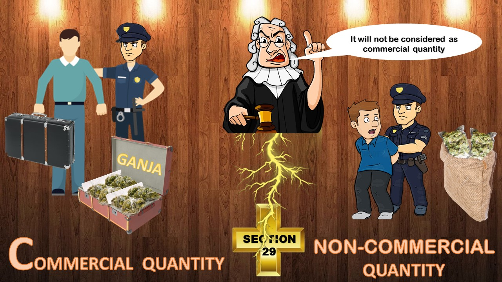

Contact us on

DAILY BLOGS
Latest From Blog

"NO INDEPENDENT WITNESS + NO CCTV + NO VIDEOGRAPHY + PARITY + CUSTODY"
The court in the matter of "Ashish Rai vs State" had held that although the recovered substance falls under the commercial quantity which attracts the stringent condition prescribed under section 37 however the Court categorically stated that we are considering the ground for bail as lack of vediographic evidence and absence of independent witnesses thus the court inclined to grant bail
Read Full Order
"NOT EVEN A SINGLE ELEMENT OF POCSO WAS MET TO KEEP THE ACCUSED BEHIND THE BARS"
The Court in the matter of "Mohd Shariq vs State" had observed that in the absence of any medical evidence against the accused it would be difficult to attract the provisions of POCSO Act. Further the court held that the physical alliance between the accused and prosecutirx though conventionally unholy, clearly lacks any element of perversion, abhorrence or odiousness. Considering the above and other relevant facts and circumstances of the case, regular bail was granted to the accused.
Read Full Order
"HIGH COURT HAD GRANTED THE BAIL TO THE DRIVER AND THE APPLICANT IS NOT EVEN THE DRIVER AND IS JUST SITTING IN THE CAR"
The court in the matter of "Abhimanyu Das vs State" had observed that merely presence in the car who was being used to transport contraband and without having direct/physical recovery from the accused, the knowledge of the presence of contraband in the car cannot be attributed to the said accused also when he was merely a co-passenger and not the owner of the car. Hence bail granted to the accused
Read Full Order"Busy place and still there is no independent witness which creates a serious doubt on the story of the prosecution"
The Hon'ble High Court in the matter of "Munib vs State" had held that recovery was affected from the public place where higher chances of availability of the public witnesses despite the fact prosecution has not even made a single independent witness nor captured a incident in his mobile phone therefore the Court has not solely relied upon the story of the prosecution and in such circumstances, the Court is of the opinion that the petitioner have made out a prima facie case for grant of bail on the grounds of absence of independent witness and prolonged delay in the trial.
Read Full Order"CAB DRIVER HAD THROWN THE PACKET - THAT DOES NOT MEAN HE HAD KNOWLEDGE ABOUT THE DRUGS"
The Hon'ble Court in the matter of "Shivam vs State" had held that merely on the basis of baseless allegations of throwing packet outside from his taxi doesn’t curtail the right to grant bail to the petitioner, other side while considering the other ground of neither independence witness was made nor the incident was Videographed hence court deem it fit to grant him regular bail.
Read Full Order"conscious possession of the contraband or the knowledge regarding the contents of the parcel cannot be attributed to the applicant at this stage"
The Hon'ble High Court in the matter of "Aslam Noorudheen vs NCB" had held that the significant consideration is that, the prosecution has not adduced sufficient evidence to establish that the petitioner had conscious possession of the contraband or was aware of the contents of the parcel and therefore, these crucial aspects remain unsubstantiated against the petitioner.
Read Full Order
"INCRIMINATING MATERIAL IN THE FORM OF CHATS CANNOT ESTABLISH A LIVE LINK BETWEEN THE PETITIONER AND CO-ACCUSED."
The Court while adjudicating the bail application "Raaz Ali vs NCB" has categorically held that incriminating material in the form of chats insufficient to prove a live link between the conspirators.
Read Full Order
"THE INTENT OF POCSO IS NOT TO CRIMINALIZE CONSENSUAL ROMANTIC RELATIONSHIPS"
While granting the regular bail to the accused in the matter of "Sanjay vs State" the court had observed that even if the prosecutrix is minor, her maturity cannot be overlooked. The Court further clarified that the intent of the legislature was never to criminalize romantic relationships. Considering the same and also the fact that the family of the prosecutrix was embarrassed by the pregnancy of the prosecutrix and made her file the present case the accused was released on regular bail.
Read Full Order
"NEITHER PUBLIC WITNESS NOR CCTV AND VIDEOGRAPHY – which CREATES A SERIOUS DOUBT ON INVESTIGATION"
The Court has observed that in every case the police officials give bald statements that they asked few passerbys to become independent witness. Further the court was doubtful as to why always the passbys are asked to become independent witness and no government officials or shopkeepers whose availability would rather be more easier at a place like Metro Station. Hence the accused has been released on regular bail for non-joining of independent witness, No photography and no videography.
Read Full Order
"No PUBLIC WITNESS AND No VIDEOGRAPHY THEREFORE No sufficient evidence and BAIL was GRANTED"
The Court in the matter of "Satish vs State" had observed that although whether the police has made genuine efforts to associate independent witness or not would be seen at the stage of Trial but the benefit of absence of independent witness/photography and videography can be given to an accused at the stage of bail when the recovery is not corroborated with any other independent evidence.
Read Full Order
"Mixing of all the contraband is not acceptable and the same creates the doubt on the recovery"
In the present case "Vaibhav Sharma vs NCB" the contraband recovered from the accused was in three packets, tested with IO kit and then transferred into a single transparent white polythene. It was stated by the court that the procedure of transferring of alleged contraband used by the agencies is not permissible by law.
Read Full Order""ANY" Gazette Officer or Magistrate is not appropriate and "NEAREST" Gazette Officer should be there in Sec. 50 Notice"
Court was inclined to grant bail to the accused/applicant in the matter "State V/s Sohaib Ali", where commercial quantity of contraband recovered from the accused. Section 50 notice served upon the applicant was not in compliance with the procedure laid down.
Read Full Order
"Samples were not taken from each packet will be a sufficient ground for bail"
In State V/s Sayyed alam@ munna, the commercial qunatity of contraband recovered from the accused, packets were all mixed together and and then the samples were drawn.Bail was granted to applicant on the ground that the instructions in 1/88 has not been followed and the sample has been drawn after mixing the contents of various packets into one container and it caused prejudice.
Read Full Order"Involvement in other cases does not become the sole ground for dismissal"
In the matter State V/s Mohd.Hafiz, prosecution opposed the bail application on the ground that the applicant is previously involved in similar kind of offences but it was overruled by the hono'ble court and bail was granted to the applicant.
Read Full Order"PUBLIC WITNESS AND VIDEOGRAPHY EVEN AT OVER CROWDED AREA"
In the matter of State V/s Sovraj, Ld.Counsels argued that the Non-joinder of independent witnesses by the prosecution and no photography and videography casts a doubt to the credibility of the evidence. Hon'ble court conveinced lack of photography and videography in today’s time seems suspicious and inclined to grant bail.
Read Full Order
"CUSTODY OF 3 YEARS AND PARITY IS MORE THAN ENOUGH FOR BAIL"
Hon'ble Judge In matter of State V/s Dhananjay Rai, the applicant was apprehended on the disclosure statement of the co-accused and the qunatity recovered from the applicant was much lesser than the co-accused and co accused was on bail so the bail was granted to the applicant on the basis of parity.
Read Full Order
"APPLICANT IS AN AUTO DRIVER AND HAD NO KNOWLEDGE OF THE CONTRABAND"
In the matter of Anower ali v/s State, Ld.Counsels advanced arguments and proved that applicant was only an auto driver and was not aware of the goods being transported. On the basis of having no knowledge of contraband,Hon'ble court granted bail to the applicant.
Read Full Order
"PUBLIC PLACE STILL NO PUBLIC WITNESS WHICH CREATES SUSPISION ON THE CASE OF THE PROSECUTION"
Hon'ble court in the matter of "Sukhwinder vs State" had stated that the absence of Independent Witness is a relevant factor for granting bail to accused and absence of independent witness casts a shadow of doubt over the prosecution case, especially when the recovery is effectuated from a public place in broad daylight.
Read Full Order
"samples were not taken from each packet and the samples which were taken from the selected packets did not jointly have the weight of 20 kg as to bring the weight of the packet within the commercial quantity"
State V/s Sharat Das is a judgement which relies upon the significance of sampling procedure of the recovered contraband. In this Honourable Court observed that the sampling procedure of the contraband was not in compliance with the procedure laid down. Ld. Counsels proved that the sampling procedure was not done in the prescribed manner so the court was inclined to grant the bail to the accused.
Read Full Order
"The probative value of any material, including forensic data recovered from the seized mobile of the applicant and bank deposit slips recovered from the mobile of the applicant, shall be tested during the trial."
In Arun kumar Azad V/s NCB it was observed by Honourable Delhi High Court that the data recovered from the accused/applicant mobile phone is subejct matter of trial, that it is a substantial piece of evidence or not. There was no recovery from the applicant so bail was granted by the Honourable Court.
Read Full Order
"NO EMBARGO TO THE INTERIM RELEASE OF VEHICLE PENDING TRIAL UNDER NDPS ACT"
In the matter of State V/s Sumit and Ors. Court observed that the vehicle used for the transportation of contraband by accused, there is no embargo on the interim release of the aforesaid vehicle in pending trial under NDPS Act....
Read Full Order
"THE ACT OF MIXING THE SAPERATE PACKETS TOGETHER IN A POLYTHENE IS A GREAT VOILATION OF LAW"
In State v/s Bhairo chaudhary, Honourable court granted bail to the applicant on the ground, that mixing of recovered contraband, by police officials is the violation of law....
Read Full Order"LOCATION DIFFERENCE CAN’T PROVE THAT THE PETITIONER WAS ESCORTING AND THE CONNECTIVITY IS ALSO NOT SUFFICIENT TO PROVE THE GUILT"
In the matter of "Sushil vs State" the prosecution was not able to satisfy the Hon’ble Court to the extent of location history as well as distance between the vehicles of the conspirators because as per the location chart of the petitioner as well as other accused persons at the time of seizure, location of petitioner as ascertained from CDRs is about 225 kms away accordingly Court finds no reason to believe that it would be possible to escort any vehicle with such a huge distance hence allowed the petitioner to be released on regular bail.
Read Full Order
"THE RECOVERY AND SEIZURE OF THE PARCEL FROM THE PLACE AND AT THE TIME AS ALLEGED BY THE NCB, IS NOW SERIOUSLY DISPUTED"
In the matter of "Shubham Chehal vs NCB" the court had stated that it is relevant to note that the case of the prosecution in itself become doubtful when they take stand pertains to the places wherefrom the recovery was affected as well as the place of seizure of the contraband which casts a doubt on the NCB’s claim that they had intercepted the parcel at the DTDC Samalkha office in Delhi, after seen the facts meticulously the court has allowed to release the petitioner on regular bail.
Read Full Order"THERE IS A PRIMA FACIE DISCREPANCY IN WHAT WAS SEIZED AND WHAT WAS ANALYSED AND WEIGHED AND THERE ARE REASONABLE GROUNDS THAT PETITIONER IS NOT GUILTY"
The Hon'ble High Court in the matter of "Govind vs State" had held that Discrepancy found on the part of prosecution in the weight while seizing and at the time of analyzing by the FSL examiners comes out to be varied, the court further emphasized supplied on the fact that the trial may take long valuable time to get concluded, Hence the present petition is allowed and the applicant is admitted to regular bail.
Read Full Order
"The evidence is primarily documentary in nature and is already in the custody of Police"
The Hon'ble Judge in the matter of "Aditya Krishna vs State" had held that prosecution evidence is predominantly documentary in nature and is currently in the possession of the police, thereby obviating any apprehension of tampering or destruction of evidence while taking into account this court satisfied and inclined to grant the regular bail.
Read Full Order
"The applicant cannot be made to spend the entire period of trial in custody especially when the trial is likely to take considerable time."
It is observed in the present matter "Pankaj Rai vs State" that the instant petitioner has already been incarcerated for a substantial period. Furthermore, inasmuch the trial will take considerable time.
Read Full Order
"DELAY IN 52A WHICH WAS ALREADY BEEN CONSIDERED FOR THE CO-ACCUSED PERSONS WILL DEFINITELY GIVE THE BENEFIT TO THE PRESENT PETITIONER"
The Hon'ble High Court while deciding the bail "Ganesh Choudgary vs NCB" had held that this Court has already taken a view on the ground of Violation of section 52A of NDPS Act while deciding the bail applications of other co accused persons thus the same benefit must be given to the present petitioner as well.
Read Full Order
"SAMPLES COLLECTING NOT FROM ALL THE BUNDLES WILL AMOUNT TO IMPROPER SAMPLING"
The procedure adopted by the prosecution in the matter "Aas Mohammed vs State" is deemed improper reason being the sample which were deposited in the FSL were not drawn from each recovered contraband packets hence this court observed that this irregularity would likely prejudice the applicant.
Read Full Order
"EVEN AFTER 2 TESTS BY THE FSL THE REPORT WAS STILL NEGATIVE WHICH MAKES THE CASE FOR DISCHARGE"
The Hon'ble Special Judge in the matter of "Shamnad vs State" had stated that notwithstanding the fact that the recovered contraband was deposited for Forensic analysis on two separate occasions for examination, the resultant reports surprisingly yielded negative results. In light of this significant development, the Hon’ble Court has in its discretion, inclined to discharged the applicant from the case, being satisfied that the negative FSL reports have diluted the strength of the prosecution case against the applicant.
Read Full Order
"SAMPLES DRAWN ON SPOT WERE SENT TO FSL INSTEAD OF SAMPLES DRAWN UNDER SEC. 52A WHICH IS A GRAVE VOILATION"
The Hon'ble Special Judge in the matter of "Arjun Pahadi vs NCB" had held that initially samples were drawn at the time of seizure on the spot by the police officials and same has been sent through inappropriate channel to the FSL instead of sending the samples drawn at the time of proceedings under section 52A before the Magistrate along with the seal of concerned Court thus it is a clear violation of section 52A and may cause prejudice to the accused
Read Full Order
"ALMOST SMALL QUANTITY, AGE 58 YEARS AND CUSTODY, WHICH IS SUFFICIENT GROUND FOR BAIL"
The Hon’ble Court in the matter of "Raj Kumar Shah vs State" had stated while taking into account the age and quantity recovered from the applicant and has deemed it fit to grant regular bail.
Read Full Order
"THE REASON FOR SUCH DISCREPANCY WILL BE A MATTER OF TRIAL, HOWEVER, IN MY VIEW, IT IS SUFFICIENT TO CAST A DOUBT ON THE CASE OF THE PROSECUTION AT THIS STAGE."
The Hon’ble Court has recently in the matter "Gaurav Chopra vs State" had articulated a view to the effect that any discrepancies in the evidence adduced by the prosecution will be duly addressed and resolved at the stage of trial. Additionally, the Court has raised suspicions about the credibility of the prosecution’s case.
Read Full Order
"THERE IS NO EVIDENCE EXCEPT THE RECOVERY TO PROVE THE CONSPIRACY AND IF THERE IS CONSPIRACY THAT WILL BE TESTED AT THE TIME OF TRIAL"
The Hon'ble High Court in the matter of "Bilal vs State" had held that prosecution should establish the link/ connectivity among the accused persons to attract the provisions of conspiracy. The recovery from the instant applicant was an intermediate quantity. Interestingly, after clubbing the quantity with the co-accused then only it would be converted into commercial quantity. Moreover, the ingredients of conspiracy would be merely satisfied once the evidences examined meticulously. Resultantly, there is no evidence available except the recovery which demonstrates that they are in connivance with each other.
Read Full Order
"THE DIFFRENCE IN WEIGHT IS MATTER OF TRIAL BUT AT THIS STAGE THE BENEFIT WILL BE GIVEN TO THE APPLICANT AS THERE IS NO EXPLANATION REGARDING DISCREPANCY"
In light of the discrepancy in the weight of the contraband, the Court in the matter of "Anil Kumar vs NCB" and has deemed it appropriate to grant the accused the benefit of doubt, in accordance with the principles of criminal jurisprudence.
Read Full Order
"NON-COMPLIANCE OF THE PROCEDURE OF SAMPLING COUPLED WITH THE DELAY IN TRIAL AND DELAY IN SAMPLING WILL GIVE THE BENEFIT OF BAIL TO THE APPLICANT"
The Court in the matter "Ajay Lamba vs State" has laid emphasis on the significance of adhering to the procedure prescribed for sampling, and has observed that the non-compliance with the said procedure, coupled with the undue delay in the conduct of the trial and the sampling procedure, constituted a valid ground for granting the benefit of bail to the applicant, in accordance with the principles of Justice and fairness.
Read Full Order
"LAW DOESN’T ALLOW TO TAKE SAMPLES AFTER MIXING OF ALL THE CONTRABAND ALTHOUGH IT IS VERY CLEAR THAT"
That in the matter of "Ajay vs State" the procedure adopted by the prosecution to draw the samples after mixing with the other recovered contraband is prohibited in law although it is a trite law that the benefit of doubt should be given to the accused.
Read Full Order
"CUSTODY ALONG WITH ARTICLE 21 CAN OVERIDE THE EFFECT OF SECTION 37 AND THE BAIL MAY BE GRANTED"
The Hon'ble Special Judge in the matter of "Saroj Sibudhi vs State" had held that Fundamental right to life and personal liberty guaranteed under Article 21 of the constitution of India can supersede the restrictive provisions of section 37 of the NDPS Act, particularly when considering the period of the applicant’s custody.
Read Full Order
"NO POSSIBILITY OF THE TRIAL GETTING CONCLUDED IN THE NEAR FUTURE"
The Apex Court in the matter of "Surender vs CBN" had stated that they finds no reason to kept the accused person behind the bars for an indefinite whereas the prosecution has cited 68 witnesses. Furthermore, Hon’ble Court has put emphasized on delay in trial as well.
Read Full Order
"IN THE WHOLE TRANSCRIPT NOWHERE THE NAME OF ANY CONTRABAND OR DRUG HAS BEEN MENTIONED"
The Court in the matter of "Shamim vs State" had finds no whisper about the specific name of any contraband or Drug in the entire transcripts record available with the prosecution thus the Court is of the view to grant him regular bail.
Read Full Order
"THE PENDENCY OF ANOTHER FIR AGAINST THE APPLICANT IS NOT GOING TO ACT AS AN IMPEDIMENT FOR THIS COURT GRANTING BAIL TO THE APPLICANT AT THIS STAGE All material mixed = Against Law"
The Hon’ble Court in the matter of "Dalai vs State" had rendered a significant ruling, explicitly stating that the pendency of another FIR against the applicant does not operate as a bar to the grant of regular bail to him in the present case, and therefore, the applicant’s entitlement to regular bail remains unaffected by the existence of the said FIR
Read Full Order
"CDR WITHOUT TRANSCRIPT IS A MATTER OF TRIAL THEREFORE THE APPLICANT HAS CROSSED THE BAR OF SECTION 37"
The Hon’ble Court in the matter of "Nafees vs NCB" had explicitly held that the CDR connectivity in the absence of transcript records is insufficient to arouse of grave suspicion thereby the bar of section 37 has been uplifted.
Read Full Order
"intermediate quantity, therefore, the rigors of Section 37 NDPS Act are not applicable, trial would take a long time to conclude and no fruitful purpose would be served by keeping him in judicial custody"
"In the matter of "Parvesh Kumar vs State" the court held that the quantity recovered from the present applicant is fall under the category of intermediate while considering the same section 37 of NDPS would not be attracted under the aforementioned facts and circumstances the applicant is entitled to be released on regular bail.
Read Full Order
"word ‘nearest’ has been used in the statute with a certain intention and cannot be ignored by the concerned Investigating Officer"
The Hon’ble Court in the matter "Aabid Khan vs State" has meticulously dealt with the interpretation of word nearest prescribed under the NDPS act and make it clear that the compliance of the same can’t be ignored by the compliance officer.
Read Full Order
"DISCLOSURE AND CALL EXCHANGE CAN’T BE THE SOLE GROUND TO DENY THE GRANT OF BAIL"
The Court in the matter of "Ajay Maheshwari vs State" held that the connectivity like Disclosure statement and call exchanged between the accused persons doesn’t restraint the accused persons from getting the benefit of regular bail.
Read Full Order
"Hon'ble Judge is of the view that the petitioner cannot be kept in custody for an indefinite period of time"
A person who assumes to be innocent till the trial would conclude can’t be incarcerated for indefinite period with the reason that trial is pending against him the Court held in the matter of "Yogesh Govardhan vs State".
Read Full Order
"EVEN IF THE RECOVERY FROM THE CO-ACCUSED PERSON WILL BE CONSIDERED THAN ALSO IT WAS AN INTERMEDIARY QUANTITY "
The Court in the matter of "Nasir vs State" had granted regular bail while considering the fact that even after clubbing the quantity recovered from the accused persons is fall under the category of intermediate hence the court is inclined to grant him regular bail.
Read Full Order
"THIS COURT FINDS NO REASON TO CONTINUE THE CRIMINAL PROCEEDINGS 1. TO SECURE ENDS OF JUSTICE 2. TO PREVENT ABUSE OF THE PROCESS OF ANY COURT"
The Hon'ble High Court in the matter of "Neelam vs State", Pursuant to an amicable settlement between the complainant and accused persons subject to specific conditions, the parties have arrived at a mutually agreeable resolution. Consequently, they have approached the court to quash the matter and the court has accordingly quashed the same.
Read Full Order
"INTERMEDIATE QUANTITY + CHARGESHEET FILED + CLEAN PAST ANTICEDENT = BAIL"
The Court in the matter of "Parth vs NCb" had granted regular bail to the accused on the ground of quantity recovered from the applicant is intermediate in nature and chargesheet has already been filed, moreover the applicant has clean past antecedents.
Read Full Order
" AT THIS STAGE TYHERE IS NO EVIDENCE TO PROVE SEC. 29 AND TO CONNECT THE RECOVERY FROM THE APPLICANT WITH THE RECOVERY FROM OTHER ACCUSED PERSONS THEREFORE, RECOVERY CAN’T BE CLUBBED"
The court in the matter of "Tahir vs State" had observed herein merely on the basis of providing fake id’s for booking the parcel does not tantamount to have sound knowledge of the concealed material inside the wrapped/packed parcel.
Read Full Order
"Discrepancy in the weight of the sample, questions the actual seizure and the prosecution has not been able to explain the discrepancy at this stage"
The court in the matter of "Sumitra vs State" had put emphasized over the method adopted by the prosecution to ascertain the indeed weight of the contraband recovered. The case in hand, Court finds discrepancy in weight of the contraband. More notably, the prosecution has failed to provide a plausible explanation for the discrepancy.
Read Full Order
"Ld. trial court was directed to adjudicate the bail matter in a expeditious manner"
The court in the matter of "Sarbpreet vs State" expressed displeasure towards the Ld. Trial court when Court noticed and counted the delay in adjudicating the bail application is more than one month while taken into account Hon’ble High Court has passed a direction to adjudicate the bail application expeditiously.
Read Full Order
" PROVIDING FAKE ID TO BOOK PACEL DOES NOT MEAN THAT THE APPLICANT HAD KNOWLEDGE ABOUT THE CONTRABAND"
The court in the matter of "Alok vs State" observed herein merely on the basis of providing fake id’s for booking the parcel does not tantamount to have sound knowledge of the concealed material inside the wrapped/packed parcel.
Read Full Order
"CALLS IN ABSENCE OF ANY TRANSCRIPTION DOES NOT FAVOUR THE CASE OF THE NCB"
The Court in the matter of "Zeeshan Abbasi vs NCB" had absence of any transcription of the call records renders it speculative to assume that the accused persons were in constant touch with each other in relation to the alleged illicit trade of contraband. Moreover, the lack of such transcripts fails to corroborate the narrative propounded by the NCB.
Read Full Order
"PETITION IS DISPOSED-OF REQUESTING THE LEARNED SPECIAL JUDGE TO DISPOSE OF THE BAIL PETITION AS EXPEDITIOUSLY AS POSSIBLE"
The Hon’ble High Court in the matter of "Vaibhav Sharma vs NCB" had issued directions to the Ld. Trial Court to dispose of the bail application with all due haste and expedition, in accordance with the principles of justice and fairness.
Read Full Order
"IF THE HON’BLE HIGH COURT HAD HELD THAT 52A IS NOT COMPLIED IN THE PRESENT MATTER THAN THAT WILL APPLY TO ALL THE ACCUSED IN THIS MATTER"
The Court in the matter of "Md.Mustaqueem vs NCB" had opined that once the Higher Court form an observation whereunder the compliance of Section 52A of NDPS Act has not been done appropriately it will prejudice the right of an accused person thus the applicability of said benefit must be conferred to all the accused persons individually.
Read Full Order
"SECTION 27A WILL NOT BE APPLICABLE WHEN FINANCING OF DRUG IS NOT CONTINOUS AND REGULAR"
The Ld. Trial Court in the matter of "Ajeet Kumar vs State" had reiterated via case in their hand, the money trail pertains to procuring of contraband which was later uncovered that it was not very frequent manner, Hence the Court while considering the facts and circumstances held that section 27A wouldn’t be incorporated.
Read Full Order
"CUSTODY CAN ITSELF SUFFICIENT TO GRANT THE REGULAR BAIL TO THE APPLICANT "
The Court in the matter of "Babu Roy vs State" had held that it is relevant to note that period of incarceration in itself sufficient for consideration to release the accused on regular bail. On the other side each passing day inside the jail could be count as change in circumstance. Noteworthy, the Apex Court had enunciated certain principles/directives which inter alia provide that if an undertrial is charged for an offence under the NDPS Act punishable and the trial is delayed and the accused has already undergone almost half of the sentence prescribed (or the minimum if there is a range provided) then he should be entitled for being released on bail subject to conditions.
Read Full Order
"NEITHER THERE WAS ANY INDEPENDENT WITNESS NOR THE VIDEOGRAPHY DONE BY THE POLICE OFFICIALS WHICH IS SUFFICIENT TO CREATE THE DENT ON THE STORY OF THE PROSECUTION"
"The Court in the matter of "Shiv Kant vs State" Had observed that there must be some other corrobtive evidences in form of independent witness, photography and videography along with the recovery to ensure fair and just investigation"
Read Full Order
"NO MATTER WHAT THE QUANTITY IS RECOVERED, ARTICLE 21 WILL PREVAIL OVER ALL"
"Constitutional rights of a person surpasses stringent provisions under any special law, held in the matter "Shahzeb Choudhary vs State". This was recognized by the Court while considering the Custody and delay in Trial are sufficient Grounds to release the accused"
Read Full Order
"Medical condition and Delay in trial will over ride the rigor of section 37"
"No allegations weighs more than the health condition of the accused held in "Shainu vs NCB". Like every other person the accused also has right for adequate medical treatment which cannot be possible in Judicial Custody"
Read Full Order
"NEITHER 52A DONE NOR THE POLICE WITNESSES SEEMS CREDIBLE, WHICH ARE SUFFICIENT TO VITIATE THE CASE OF THE PROSECUTION"
"The Special Judge of the Karkardooma Court had held in "State vs Arvind Yadav" case that the prosecution case seems to be a half baked, where the prosecution witnesses themselves not supported their case and made the arrest suspicious"
Read Full Order
"If the grounds of arrest were not communicated to the accused, then the arrest is invalid and bail will be the outcome"
"The Special Judge of Dwarka in the matter of "Kenneth vs State" had not only questioned the arrest but had held the ground of arrest invalid and had granted the regular bail to the accused in NDPS case with the recovery of commercial quantity"
Read Full Order
"RATE, MAAL, SAMAN….. CAN NOT BE TAKEN IN NEGATIVE SENCE AT THIS STAGE AND WEATHER THE CONSPIRACY WAS THERE OR NOT IS A MATTER OF TRIAL"
"The Delhi High Court in the matter of "Rohit @ Rahul vs State" had held that interception of call does not shows that the conversation is all about drugs and the maal, rate and saman cant ve interpreted against the Applicant at this stage therefore the bar of section 37 will not sustain anymore"
Read Full Order"RECOVERY IS JUST ABOVE THE THRESHOLD AND ARTICLE 21 WILL PREVAIL OVER SECTION 37."
"The Delhi High Court in the matter of "Tarkeshwar vs State" had held that the Petitioner had forged his identity and having other criminal case against him but that will not be any reason for denying the regular bail to the petitioner when the patitioner case falls under the ambit of Article 21"
Read Full Order
"Even having 17 criminal cases on the petitioner will not debarred him from getting the benefit of the bail and it can't be the sole ground of dismissal"
"Delhi High Court in the matter of "Laxman Bachhar @ Lakhan vs State" had held that the custody of 2 years and 2 months is sufficient to override section 37 and will fall in the ambit of Article 21 even though the petitioner is an habitual offender and had 17 criminal cases against him."
Read Full Order
"It is unbelievable that no public witness was present and no videography was done at such a busy please"
"Delhi High Court in the matter of "Geegal Kumar vs State" had held that "No videography and no witness will amount to no case" and if the same clubbed with the delay in the trial is sufficient to grant the regular bail the Petitioner"
Read Full Order"QUANTITY IS LITTLE ABOVE THE THRESHOLD OF THE COMMERCIAL QUANTITY BEING 20 KGS."
"The Hon'ble Judge of Delhi High Court in the matter of "Jonial vs State) had held that the recovered quantity is just above the threshold quantity which along with the custody will play a vital role in granting bail to the Petitioner"
Read Full Order
"The other packets were never even opened before the Ld. MM and it is not even mentioned what was the substance inside those packets."
"Ld. Session Judge in the matter of "Saroj Kumar Pattanayak" had noted that neither those packets were tested nor those packets were ever opened, weighed or sampled therefore those left over packets were not clear that those contains contraband or not and the benefit of doubt will be given to the accused"
Read Full Order"Mixing of the recovered contraband will amount to Grave voilation and give benefit to the accused"
"The police officials in the mater of "Shahabuddin vs State" had already mixed the contraband recovered before sending the samples to the FSL which is totally against the law and it will become imposible to predict weather all the packets contains contraband or not"
Read Full Order
"NEITHER THE WITNESS HAD RECOGNIZED THE PETITIONER NOR ANY RECOVERY FROM THE PETITIONER"
"Even as per the witness the petitioner is not carring the gun even the eye witnesses had not recognized the petitioner"
Read Full Order
"QUANTITY DOES NOT MATTER IF THE PROCEDURE IS NOT FOLLOWED AS PER LAW HELD IN LAXMAN THAKUR CASE"
"Even though the objection was not taken at the belated stage but if the procedure was not followed as per law than that will be considered while granting bail to the Petitioner"
Read Full Order
"ONLY BEING THE MEMBER OF THE WHATSAPP GROUP NOT CREATE THE GUILT ON THE PETITIONER"
"Neither the Petitioner had received any payment nor transfered to anyone, the only evidence is whatsapp chat relating to the commission out of the forged amount"
Read Full Order
"IT IS SUFFICIENT THAT CHARGESHEET IS FILED AND SECTION 37 WILL NOT BECOME THE HURDLE"
"Petitioner is not required in custody where there is recovery of intermediary quantity from the petitioner and chargesheet is already been filed"
Read Full Order
"IN 3 YEARS OUT OF 14 WITNESSES ONLY 3 ARE EXAMINED WHICH CLEARLY REFLECTS THE DELAY IN TRIAL"
"Even after the dismissal from the High Court the Session Judge had granted the regular bail on the ground of delay in trail where the custody of the Applicant is around 3 years"
Read Full Order"NO INDEPENDENT WITNESS + NO VIDEOGRAPHY = NO EVIDENCE TO LINK THE PETITIONER WITH THE RECOVERY"
"The Delhi High Court had held that only the recovery is not sufficient but the other evidences should be there to corroborate the recovery with the Petitioner"
Read Full Order
"only the connectivity and statements cant prove the involvement of the applicant and not sufficient for the guilt "
"presumtion about the knowledge of the contraband cant be proved only on the basis of the connectivity and need some corelating evidences"
Read Full Order
"ALTHOUGH THE APPLICANT HAD 2 OTHER NDPS CASES ON HIM BUT IN THIS RECOVERY IS INTERMEDIARY AND SECTION 37 WILL NOT BE ATTRACTED"
"Even having the past anticedent of NDPS nature it will not become the bar in granting bail and section 37 will not come into picture where the recovery is of intermediary quantity"
Read Full Order"IN THE CASE OF NO INDEPENDENT WITNESS AND NO VIDEOGRAPHY THE PROSECUTION HAD NO EVIDENCE TO CONNECT THE PETITIONER WITH THE RECOVERY"
"Delhi High Court had held that merely on the basis of recovery the prosecution can't prove the guilt of the accused and for the same some supporting evidences are need to be required"
Read Full Order"Prosecution can not presume itself the weight of each contraband else the police shold follow the proper procedure so the court need not to presume"
"Police had mixed the green and pink colour capsules without proper weighing each type of capsules and due to that the prosecution had no other option otherthan to presume"
Read Full Order
"only on the basis of disclosure and CDR connectivity the guilt of the accused can't be proved and acquital will be the end result"
"The Hon'ble Judge had discharged while holding that conviction can't be proved only on the basis of Disclosure and CDR connectivity therefore it will be drain of machinery of law to prosecute for the acquital"
Read Full Order
"Neither the recovery from the applicant not on his instance and the only evidence is CDR which cant prove the case at this stage"
"presumtion cant be made only on the basis of CDR connectivty when there is no other evidence to prove the guilt of the applicant"
Read Full Order
"Mixing of contraband without weighing the capsules weight from each box is gross voilation"
"Police officials had transfered the drug from the 2 cartons in into single carton and had not weight the each box drug, which is absoletely against the procedure prescribed by law "
Read Full Order"Disclosure, Calls, and drugs photo from the phone are not sufficient proofs to connect the Applicant with the recovery"
"Prosecution cant prove the guilt of the Applicant only on the basis of the CDR, Disclosure and the drug photo of the same batch number recovered from the phone of the Applicant and prosecution sould prove the case beyond reasonable doubt"
Read Full Order"Disclosure, CDR and Money Transaction can't prove the guilt of the Applicant"
"To prove the Guilt of the Applicant the prosecution need to prove the allegations beyond the reasonable doubt and sould not harp only upon the CDR and Transactions"
Read Full Order
"It is inconceivable that every person had denied to became an "Independent witness" at a highly populated area"
"Without independent witness and videography the prosecution can't prove the Guilt while only relying upon the recovery made from the Applicant"
Read Full Order
"No evidence on record to prove the knowledge of the contraband and without which the case of the prosecution can't stand on its legs"
"Prosecution had to prove his case in every respect and if prosecution is not able to prove the knowledge of the Drugs then it is the clear case of "NON CONCIOUS POSSESION"
Read Full Order
"Merely on the basis of transactions Conspiracy can't be proved and bail can be granted"
"Transaction of 75000 cannot connect the Applicant with the recovery and it cannot be a sole evidence to prove the guilt of the accused"
Read Full Order
"DD Entry for Sec. 42 is not the part of the chargesheet which is mandatory in nature and absence of which is sufficient for granting Bail"
"Mandatory Non-Compliance of Sec. 42 casts a serious doubt on the genuineness of the case of the prosecution and the absence of the DD entry is sufficient to prove the non-compliance of sec. 42"
Read Full Order
"Bail granted after considering the nature of the contraband, the quantity and the delay"
"Refering to the view of the Apex Court the Hon'ble High Court had taken the lenient view after considering the nature of the contraband"
Read Full Order
"Transactions and CRD are sufficient to show the implication but nt sufficient to dismiss the bail"
"merely CDR doesnot disclose the actual conversation and need to be proved with transcripts and only the CDR and bank transactions cannot be treated to be corroborative material in absence of substantive material found against the accused"
Read Full Order
"Chargesheet Incomplete for 1 accused can't be complete for the other accused"
"Chargesheet incomplete for the 1 accused for non filing of the FSL report for his recovery cannot be said complete for other accused persons even though FSL reprot of the contraband recovered from them was filled "
Read Full Order
"Marely standing with the consignee of the parcel will not amount to Sec 29 and not sufficient to prove the knowledge"
"The Delhi High Court had held that only standing with the receiver of the parcel and having the connectivity with him will not amount to conspiracy even the same drug photo was recovered from his phone"
Read Full Order
"Compliance of Sec 42 by official ther than who received the information will be considered as NO compliance of sec. 42"
"Even though the information was reduced in writing as per section 42 but by some other official and not by the person who received information, that will make the recovery doubtful and lift the bar of sec 37"
Read Full Order
"Connectivity, Transaction and even the Past Anticedent will not become an hurdle for grant of Regular Bail"
"The calls and transaction connectivity even of the same day of recovery cant prove the conspiracy and connect the accused with the recovery"
Read Full Order
"If State can't bear the medical expenses of the accused then accused has right to Bail"
"The Delhi High Court had granted the Interim Bail to the Petitioner after stating that the Health of the Accused can't be compromised on the stake of expenses"
Read Full Order
"Samples should be drawn from each and every packet and voilation of the same entitled the petitioner for regular bail"
"out of 5 packets the samples were drawn only from 1 packet leaving rest 4 packet in every sack, which is completely a non compliance of the sampling procedure prescribed under standing order and benefit of the same will be given to the accused by granting bail"
Read Full Order
"Clubbing of quantity will not be considered while deciding the regular bail of the particular accused from whom only intermediary quantity is recovered "
"The Hon'ble High Court had held that it is not about the recovery from all the accused persons but the bail will be decided only on the consideration that what is recovered from the present petitioner"
Read Full Order
"Procedure of Homogenizing of the contents of the recovered material and drawing of the samples thereafter is against the procedure of Standing Order"
"Homogenious mixture can never used to ascertain the actual nature of the contraband and that will vitiates the procedure of sampling and therefore the bar of section 37 will be lifted while adjudicating the regular bail"
Read Full Order
"No provision in DMC act which permitssealing of premises on the ground of NDPS activities were carried out therein"
"Merely on the involvement in NDPS case and using his property for the same context, this will not empower the DMC to seal the property of the petitioner and if sealed it shall be de-sealed forthwith"
Read Full Order
"Recovery made from the co-accused cannot be added to the quantity recovered from the applicant"
"2615 gram of Opium recovered from the co-accused person can never be added in the recovery of 510 gram of opium recovered from the Applicant and the bail was granted while considering only the intermediate recovery from the Applicant"
Read Full Order
"Samples not taken from each packet raises apprehension that the left over may not contains contraband and benefit of doubt will go into the favour of the Petitioner"
"Samples only from 1 packet out of 16 packets and leaving 15 packets behind raises a doubt that those packets will contains the contraband or not and the same is against the procedure prescribed in standing order"
Read Full Order
"No samples were taken from the other packages, there is nothing to presume that the other packages also contained contraband"
"Sampling procedure were not followed as per the law laid down in Standing Order that samples shall be drawn from each and every packet with out leaving behind any of the packet otherwise that will create a doubt on the recovery"
Read Full Order
"Recovery without independent witness and Videography is not sufficient"
"The Hon'ble High Court had held that recovery itself is not sufficient for denial of the bail and requires independent witness and Videography of the recovery for supporting the recovery made from the Petitioner"
Read Full Order
"Sampling from each packet is mandatory and not a formality"
"The Hon'ble High Court while granting the regular bail had held that sampling not from each packet is a grave voilation of law and standing order which result in grant of regular bail to the accused"
Read Full Order
"NO Independent Witness and Videography can be a sole ground for granting Regular Bail"
"The Hon'ble High Court had observed that the recovery cant be proved at this stage with out independent witness and videography and because of only recovery the Applicant can't be kept behind the bars"
Read Full Order
"Recovery from the petitioner will only be considered while deciding the regular bail and not from the co-accused persons"
"Hon'ble Delhi High Court had held that the Recovery from the Petitioner is intermediary quantity and section 37 will not come into picture even though recovery from the co-accused persons was of commercial nature "
Read Full Order
"Bail Application already adjourned on manny occassions, no further adjournment and need to be decided on the next date positively"
"Trial Court is directed by the Honble High Court to decide the Regular bail application positively on the next date either this way or the other"
Read Full Order
"Procedure adopted by IO violates the standing order No. 1/88 since the collection of sample itself was faulty, the rigours of section 37 of NDPS Act would not apply"
"Procedure of Mixing of Contraband is voilation of the standing order and squarely covered by the landmark judgement Laxman Thakur vs State, therefore the bar of section 37 will not be applied and bail is granted to the Applicant"
Read Full Order
"NO Evidence to connect with the consignment from whom the recovery is made"
"The Court held that enev though the chats are incriminating but had no connection with the recovered parcel and the only evidence is the disclosure statement of the accused persons"
Read Full Order
"Incriminating Chats coupled with some recovery of drugs were not sufficient to connect Petitioner with the main accused"
"Delhi High Court had held that recovery of WhatsApp chats is not sufficient to corroborate with the recovery, Chats should be verified by the proper agencies for reading those as an Evidence."
Read Full Order
"STANDING ORDER IS REQUIREMENT OF LAW AND SHOULD BE FOLLOWED"
"Mixing of samples was not permissible and the act thereto will be against the Standing Order, and as per the Hon'ble High Court of Delhi, Standing Order was not only the guidelines by its a requirement"
Read Full Order
"Petitioner had no knowledge of the 34.7kg Heroin and had only responsible for Rock Salt "
"Delhi High Court while granting the bail to the Petitioner had stated that merely being an importer is not sufficient that he is in conscious Possession of the hidden drug"
Read Full Order
"Applicant is only the car owner and has no link with the contraband (Ganja)"
At this stage, other than the disclosure statement there is nothing to show that the applican/accused had allowed the use of his car for transportation of contraband with his knowledge and consent.
Read Full Order
"Applicant cannot be refused bail even if he has been declaired proclaimed offender"
if the Applicant was declaired PO than also Bail can't be denied only on such ground as its a saperate offence which is registered under section 174A of IPC, which is an saperate offence and not fall under NDPS Act.
Read Full Order
"Essential purpose of NBWs is to secure the presence of a noncompliant party and need not automatically result in a remand order"
petitioner was unable to reach the court on-time by reason of traffic issues due to the Bharat Jodo Yatra organised by a political party. petitioner has been remanded to custody only by reason of NBWs having been issued against him it is not considered appropriate to keep the petitioner in judicial custody pending final adjudication of the present petition.
Read Full Order
"without any insight as to what the contents of the calls were; and that pursuant to the disclosure statements made by the petitioner and co-accused Harish, nothing has been recovered"
The solitary piece of evidence against the petitioner appears to be the CDRs, which show that he was in telephonic communication with co-accused, without any insight as to what the contents of the calls were; and that pursuant to the disclosure statements made by the petitioner and co-accused Harish, nothing has been recovered.
Read Full Order
"Sampling was not done as per the Standing Order which is a requirement of law"
Sampes were drawn after mixing all the contents which has caused a serious prejudice to the Applicant and the bar of section 37 will be lifted.
Read Full Order
"If complainant is reimbursed with the amount then the bail can be considered"
Delhi High Court granted the regular bail to the bank employee who had played a part in the money fetching conspiracy on the ground of settlement
Read Full Order
"Discrepancy in weight of the contraband will go into the root of the matter and raise the question on actual seizure"
Delhi High Court on observing the Discrepancy in weight at different stages of the case and the Prosecution had not been able to explain this discrepancy which erodes the credibility of the recovery proceedings
Read Full Order
"Dismissal of Bail by Superior Court will not a hurdle to raise a legal point at any stage"
Learned Session Judge had granted the Regular Bail to the Applicant on the fresh legal ground despite the dismissal from Supreme Court
Read Full Order
"Mandatory Provisions can't be left on whims and fancies of the prosecuting agency"
Sampling under Section 52A must be done with in 72 hours or nearby and voilation of the same will create a serious doubt which goes in the favour of the Accused...
Read Full Order
"Notice need not to be issued if it can be clearly seen from medical documents that Petitioner is serious"
Delhi High Court had extended the Interim Bail of the Petitioner on just relying upon the medical documents that the Petitioner is admitted
Read Full Order
"IF THE HON’BLE HIGH COURT HAD HELD THAT 52A IS NOT COMPLIED IN THE PRESENT MATTER THAN THAT WILL APPLY TO ALL THE ACCUSED IN THIS MATTER"
1. The Court opined that once the Higher Court form an observation whereunder the compliance of Section 52A of NDPS Act has not been done appropriately it will prejudice the right of an accused person thus the applicability of said benefit must be conferred to all the accused persons individually.
Read Full Order
"ALLUREMENT BY SISTER, SUFFERED BY BROTHER"
Brother got the bail from the Session Court who was implicated by his own sister in POCSO case just for the sake of her happiness ...
Read Full Order
"A JUDGE IN THE SHOES OF COMPLAINANT CAN NEVER RAISE THE GRAVITY OF OFFENCE "
Learned Session Judge has compounded the offence in which the complainant is a retired judge without getting influenced...
Read Full Order
"The complainant had not identified the accused person which itself doesn't support the story of the Prosecution on which bail is made out"
complainant disputed the identity of the Accused shown to him, which can be a sole ground to grant the bail.
Read Full Order
"MEDICAL CONDITION CAN SURPASS THE GRAVITY OF OFFENCE"
Delhi High Court has granted the Interim BAil of 2 months to the accused from whom 950kg of Ganja was recovered...
Read Full Order
"COMPOUNDING - A WAY OUT TO AVOID FULL FLEDGE TRIAL"
Once the offence is compounded the accused should be released as soon as possible and can even be released directly from the JC without sending back to the Jail Authority...
Read Full Order
"A GROUND NEVER ARGUED IN BAIL IS IT SELF A CHANGE IN CIRCUMSTANCES FOR THE FRESH BAIL"
Learned Session Judge had granted the regular bail on the point of Homogeneous by considering it a change in circumstances as never put before this court...
Read Full Order
"Gravity of offence cannot overpower the presumption of innocence untill proven guilty"
In the offence U/s sec-315 of IPC, Hon'ble Judge held that Person facing trial is to be presumed innocent, until proven guilty...
Read Full Order
"STRICTER THE Law/ PROCEDURE - STRICTER THE COMPLIANCE OTHERWISE THE BENEFIT WILL GO IN THE FAVOUR OF THE ACCUSED"
Hon'ble Delhi High Court granted the regular bail to the accused while considering that the procedure of sampling was not followed as prescribed by the Apex Court...
Read Full Order
"Delhi High Court grants interim bail to the Accused in NDPS case for 2 months as well as issued advisory to Jail Authority"
No treatment available in jail for Contagious Diseases, Delhi High Court grants 2 months Interim Bail with Advisory to the Jail Authorities...
Read Full Order"Procedure of sampling can only be ground for bail and to vitiate the trial in NDPS"
Sampling not done as per the procedure will be the only ground for Regular Bail...
Read Full Order"Not a Rape or Extortion but look like a Relationship - Regular Bail granted"
Session Court after hearing and going through all the evidences granted Regular Bail to the main accused when girlfriend was the complainant in Rape and Extortion case ...
Read Full Order
"CDR + LOCATION + DISCLOSURE EVEN NOT A GROUND TO KEEP THE ACCUSED BEHIND THE BARS"
High Court of Delhi granted regular bail to the Source when there is CDR, Location and Disclosure of the Co-accused Persons...
Read Full Order
"Diabetes is so high that can't be cured behind the bars - Interim Bail granted"
Delhi High Court had granted the Interim Bail to the Accused of Bank Fraud of 1.39 Crore while going through the Daily Diabetes Chart...
Read Full Order
"Not such case that shold come to High Court - Regular Bail after Comeuppance PP and the Trial Judge"
Delhi High Court granted Regular bail to the Accused after Comeuppance/ Scolding the Public Prosecutor and the Trial Court Judge...
Read Full Order
"Anticipatory Bail granted even CCTV footage was present in bank fraud of 1.38 Crore"
High Court of Delhi had granted Anticipatory Bail to the Accused in Bank Fraud case even after having a CCTV footage of offence...
Read Full Order
"Concealment of Survivor members is a Fraud in itself and FIR need to be registered"
Facts Concealed about the Survivor members is a prima facia Fraud U/s 420 of IPC and there is no secound opinion as whether the FIR should be registered or not...
Read Full Order
"High Court has the power under Article 227 to decide the appeal of maintenance tribunal"
High Court can be an alternative remedy for the Appeal from maintenance tribunal under Article 227...
Read Full Order
"Welfare and nurture of child is paramount importance - Grand-mother was granted Interim Bail"
Session Court had Considered the welfare and nurture of child and granted interim bail to the accused who is the Grand-mother...
Read Full Order

"connected recovery will not be clubed U/s 29 of NDPS and will be considered as per its quantity"
2 recoveries at different point of time will be considered 2 saperate recoveries and will not be clubed U/s 29...
Read Full Order
"Regular Bail in Commercial Quantity as the sampling was not done as per the procedure prescribed by law"
If the procedure of sampling was not as per law than quantity was immaterial for regular bail and that will be granted to the applicant...
Read Full Order
"Providing the location chart of raiding team will nowhere prejudice the right of prosecution"
Delhi High Court finds nothing wrong in providing the location chart of the raiding team and held that this will nowhere prejudice the right of the prosecution...
Read Full Order
"Interim Bail does not depend on heinousness of crime"
High Court of Delhi allows interim bail application after previous dismissal on the ground of heinousness by trial court...
Read Full Order
"Trial Court had not appreciated the fact that release of SIM will not effect the case of the prosecution"
Release of SIM number and Release of Mobile were two different concept and release of SIM nowhere effect the prosecution...
Read Full Order
"Ossification test broken the perception of POCSO while considering the Bail"
Ossicification and circumstances evidences plays the major role while deciding the Regular Bail application...
Read Full Order
"Regular Bail in Delhi Riots 3 Murder Case as witness backstep"
Witness didn't identify, 4 get bail in riots murder cases and public prosecutor didnt object to bail ...
Read Full Order
"SAME DAY FILING AND EXTENSION OF INTERIM BAIL DUE TO MEDICAL EMERGENCY"
Due to medical emergency extension of bail was filed at 10:30 and was granted at 2:00 on the same day...
Read Full Order
"NEW DELHI RIOTS: BAIL TO 4 IN 3 MURDER CASES"
Delhi court has granted bail to four persons in three murder cases related to the north east delhi riots after non identification by the witness...
Read Full Order
"only being a member of that group is not sufficient"
Accused had not assaulted the complainant and with whom the struffle took place was not the complainant...
Read Full Order
"No Court can issue NBW during pre-lunch session - Delhi High Court"
High Court set aside the order of session court and gives direction to Jail authority to release the accused immediately...
Read Full Order
"ANTICIPATORY BAIL GRANTED IN CASE OF DAYLIGHT ROBBERY OF 54 LAKHS LOOT ON GUN POINT"
Hon'ble Court has given the Anticipatory Bail (protection from arrest) to the accused of daylight robbery of 54 lakhs on gun point...
Read Full Order
"30 Stiches to complainant but still the accused enlarged on Bail"
After getting 30 stiches to the victim Section 326 was imposed on the accused but still all together can't bar the accused from regular bail...
Read Full Order
"INTERIM BAIL FOR BETTER MEDICAL TREATMENT OF ACCUSED ALLOWED"
Interim Bail allowed in HDFC Fraud case for the better treatment of his health in private hospital...
Read Full Order
"Date of filing will be considered while deciding default bail"
In the matter of Default Bail even a single minute can put the liberty of the applicant in question...
Read Full Order
"regular bail in fake medicine manufacturing case"
Regular Bail by the Court of Session to the accused who was indulge in fake cancer drug manufacturing and selling ...
Read Full Order
"ILLEGAL REMAND IS A GROUND FOR DEFAULT BAIL"
Magistrate has no right to take the remand of the accused under section 167(2) or 309(2) after submision of the chargesheet ...
Read Full Order
"RIGHT OF BAIL DUE TO THE DEFAULT OF MAGISTRATE"
Accused has the right to get default Bail on the default (delay in taking cognizance) of the magistrate...
Read Full Order
"IF NO TO COGNIZANCE THAN YES TO BAIL"
Not taking the cognizance after submission of the chargesheet can be a ground for the Default Bail...
Read Full Order
"It's mandatory to register the FIR in cognizable cases"
Police officials had no option other than to register the FIR where prima facia it is an Cognizable offence...
"It was never an accident - Murder"
FIR lodged in kite flying accidental death case turned out to be an investigation of a murder...
Read Full Order
"Interim Bail in Delhi Riots"
Session Judge grants Interim Bail to the Accused of Delhi Riots on the ground of sister marriage for 1 week...
Read Full Order
"First Regular Bail in Delhi in Remdesivir case"
Delhi High Court grants Regular Bail to all the 4 accused in case of illegal holding of Remdesivir injections where Session Court considered the morality as the ground for dismissing the Bail.
Read Full Order
"Regular Bail to 4 persons in illegal holding of Remdesivir injections"
Delhi HC grants bail to 4 persons accused of illegal holding of Remdesivir injections during Covid second wave
Read Full Order
"Courts Protection from creditor even having Agreement"
Being a muscle man doesn't give you right to take the law in his hand, Delhi High Court grants protection to the debtor for the recovery by muscle man (Creditor)...
Read Full Order
"Regular Bail granted without surrender of Interim Bail"
Accused on Interim Bail inc Commercial Quantity of Ganja will never be the Hurdle to get the Regular Bail. Regular Bail is granted to the accused without surrender
Read Full Order"Stay at the instance when the demolition army is at door"
The Demolition army went back without completing there task as the court protects the houses with the hands of Stay order. stay order on demolition when the team for demolition standing on the door...
Read Full Order
"Does the Bail Application be heard through the Ears of Morality"
Does the High Court of Delhi grant Regular Bail to the Accused indulged in black marketing of Remdesivir injections or the bail will be dismissed on the ground of Morality?...
Read Full Order
"No Bail before Chargesheet in Commercial quantity is just a Myth"
Regular Bail granted by the Session Court in Commercial Quantity even before the filing of chargesheet
Read Full Order"Commercial quantity and non filing of chargesheet does not put any bar on Interim Bail "
The petitioner was arrested in Commercial quantity of Ganja on 18 August and Chargesheet is not filed but these are not the bar or any obstacle to get the Interim Bail...
Read Full Order
"Interim Protection Granted to accused despite the chargesheet has been filed"
The Petitioners was charged U/s 420 of IPC for inducing the complainant to pay sum of rupees 10.5 lacs as a consideration for obtaining admission in medical college and further cheated the complainant with the said amount...
Read Full Order
"Order of Divorce Stayed as Parties are bound to adhere with the terms of the settlement deed"
Judgment of Divorce passed by the family court was passed in the ignorance of the settlement between the parties but as parties are bound to adhere the terms of the settlement the operation of impungned judgement was stayed...
Read Full Order"Electricity connection granted for building above 18 meter of height by the Court"
The subject floor for which an electricity connection has been applied for by the petitioner falls within the height of 15 meter, the same is covered by the amended schedule of 2021, so the petitioner was granted electricity connection...
Read Full Order
"Section-12 mandates to dispose of the proceedings within a period of 60 days"
Court directed trial court to make endeavours to conclude the proceedings under the DV Act, 2005 in this case within a period of 60 days...
Read Full Order
"Merely because istridhan articles have to be recovered, is not a ground to deny Anticipatory Bail"
Court Granted Anticipatory bail to in-laws in the case of 498-A IPC stating that an Anticipatory Bail cannot be denied on the mere fact that istridhan is to be recovered...
Read Full Order
"Bail Garnted as accused name was not mentioned in the statement of 164 Crpc by the prosecutrix"
Prosecutrix had not named the petitioner U/s 164 Crpc to be the person with whom she had entered into a physical relationship looking into the nature of allegations petitioner was directed to be released on bail...
Read Full Order
"Medical Ground can be considered for Interim Bail even in Commercial Quantity"
Session Court granted interim bail to an accused charged under NDPS Act for commercial quantity, considering the medical condition of the mother of the accused...
Read Full Order
"Electronic system to transmit bail orders to prisoners to avoid delay held by supreme court suo moto"
supreme court suo moto on a newspaper cliping held that even after granting bail, prisoners still have to remain in jail due to delay in communication of bail orders. the court decided to implement safe electronic mode to transmit bail orders to the prisoners to avoid delay in their release...
Read Full Order
"Anticipatory bail granted in 498A/ 420 with the stringent condition to pay 20 lacs to complainant"
The petitioner was admitted anticipatory under two FIR against him U/s 498A/ 420 of IPC with the stringent condition that the petitioner shall pay 20 lacs to the complainant...
Read Full Order
" “Ordeal faced by the children in custody proceedings slowly coming to an end as their voices have a say.”"
The Supreme Court allowed the 7-year-old child according to his wishes to live and study in Singapore with his mother. The Court gave its finding after interacting with and understanding the sensitivity of the case: " During the course of the interaction on the video-conferencing platform, Sattik indicated his desire to reside with his mother in Singapore"...
Read Full Order
"Preferences of Child is of paramount Importance"
A landmark precedent set by a 3-Judge Bench of the Hon’ble Supreme Court comprising of Justices UU Lalit, Indu Malhotra and Hemant Gupta (2:1) interacted with the child in order to ascertain his wishes and then allowed the custody of child to his father who is located in Kenya...
Read Full Order
"The Supreme Court upholds decision of Madras High Court in which an ex-parte decree passed against a minor not represented by a guardian who is duly appointed was held as a nullity"
The Supreme Court upholds decision of Madras High Court in which an ex-parte decree passed against a minor not represented by a guardian who is duly appointed was held as a nullity...
Read Full Order
"Restriction should not be imposed on the ambit of Anticipatory Bail "
Court Should not impose the restriction which are not envisaged U/s 438 crpc held by the Apex court in Siddharam Satlingappa Mhetre vs State Of Maharashtra.
Read Full Order
"Bail granted to Murder accused even involvement in another case"
Court granted Interim Bail to an under trial prisoner facing trial U/s 302 IPC, considering the HPC guidelines and parity...
Read Full Order
"women will not have the right to inherit from her deceased husband once she got remarried"
The chhattisgarh high court ruled that if a widows remarriage and the marriage remains valid, she will lose her right in property inherited from her previous husband.
Read Full Order
"Protection to Teacher against any coercive action"
Impugned order passed by the Commissions for Protection of Child Rights directing registration of FIR against the petitoners was stayed by the court...
Read Full Order
"Not as per Natural Justice if Petitioner is to be burdened with court fees twice"
Court accepted the contention of the Counsel of Petitioner as Petitoner should not to be burdened with court fees twice and issued notice thereof...
Read Full Order
"Medical ground is a valid ground to expedite suit proceedings"
Considering the medical state of the petitioner the Hon'ble High Court directed the Trial Court to dispose of the suit within a period of 1 year
Read Full Order
"Delhi High Court directed trial court to expedite recording of prosecution evidence"
Hon'ble High Court of Delhi directed Session Judge of Delhi Court to expedite the recording of prosecution witness and colclude the same with in the period of nine months from the date of first hearing after the resumption of normal functioning of court...
Read Full Order
"Bail granted in forged cheque scam despite non-recovery of amount"
Delhi High Court granted bail to a woman charged U/s 420 of IPC where the main accused is declared to be an absconder with the amount...
Read Full Order
"Untraceable whereabouts is not a ground for denying Restitution of Conjugal rights"
Delhi High Court set aside the order of Family Court and remanded back the petition of section-9, Restitution of Conjugal rights under HMA stating that untreaceablity of whereabouts is not a ground to setaside...
Read Full Order
"Maintance will not be repudiated due to the status of LIVE-IN-RELATIONSHIP"
Delhi High Court in Parveen Tandon vs Tanika Tandon clears the scepticism that a women in shared household with the status of live in relationship was also entitled to interim maintenance despite petitioner being married man...
Read Full Order
"Teacher acquital from the charges of sodomy with 11 year boy "
In Abdul Salam vs State, Delhi High Court acquits after conviction by the session court on the ground of no injury on private parts and inconsistency of the statement of witness and medical report...
Read Full Order
"Acquital as sampling not according to procedure of law"
In Ahmed Hassan Muhammed vs The Customs, Delhi High Court Acquits as the raiding team had not performed the sampling according to the due process of law...
Read Full Order
"waiver of right U/s 50 of NDPS is not the ground of Bail"
In Nabi Alam @ Abbas vs State, the court had cleared that if the person had waved of his right to search than also it was considered that the sec 50 was complied...
Read Full Order
"Trial Vitiated if the IO is H.constable or below in NDPS"
Supreme Court in Megha Singh vs State Of Haryana states that its the right of accused to had the Fair Trial where the trial is vitiated as the IO is of H.constable rank.
Read Full Order
"Divorced women have right to shared household belonging not to just husband but also to his relatives"
Apex Court had cleared the right of shared household by the divorced women over the house of relatives of the husband.
Read Full Order
"There will be no pending cases in courts if we have more judges like Justice Jasmeet Singh"
In yet another instance of a High Court sitting beyond normal courts hours, Justice Jasmeet Singh of the Delhi High Court sat past 11 pm on Monday to complete the hearing of matters listed before him...
Read More
"Petition under Article 227 will be maintainable against Domestic violence act proceedings"
The Madras High Court in its single-judge bench of Justice GR Swaminathan held that Article 227 of the Constitution is “forum-neutral” making no distinction between civil and criminal cases...
Read More
"Is it the partiality or the procedure of law"
Member of the Rajya Sabha and Senior Advocate P Wilson has written to President Ram Nath Kovind registering concern that the High Courts of many States are not being adequately represented...
Read More
"was he active member of BJP or a JUDGE"
West Bengal Chief Minister Mamata Banerjee has written to Calcutta High Court Acting Chief Justice Rajesh Bindal requesting him to reassign the election petition...
Read More
"No one above law even the Advocates"
"Usage of the position of advocate for other than just causes is nothing but an act of corrupt nature, which requires to be cut down by the sword held in the hands of the statue of Justice," the Court said.
Read More
"low standard of education system leads to feel shameful while introducing as lawyer or judge"
"For the sake of the dignity of what you and I wear, I think you should look into it more seriously, not as a professional matter, and try to deal with the malaise", the Chief Justice told the BCI counsel today...
Read More
"Protective Shield for the essential wings of the justice delivery system"
7 Member Committee constituted by BCI For Framing Draft of "Advocates Protection Act" which will be the protective shield for the advocates and their family from threats & Attacks...
Read More
"Is it a solicit or a kidnapping"
On wednesday, 16 June 2021, a miraculous case come before Bombay High court, where an advocate named Vimalchandra umeshchandra jha was an accused of kidnapping and torturing of his own client...
Read More“Contraband quantity is just a point of consideration and will not solely decide the bail”
In the matter “State vs Darshan singh” Sc. No. 41/2018, Advocate Aditya Aggarwal put his efforts proved that “Contraband quantity is just a point of consideration and will not solely decide the bail”...
Read More